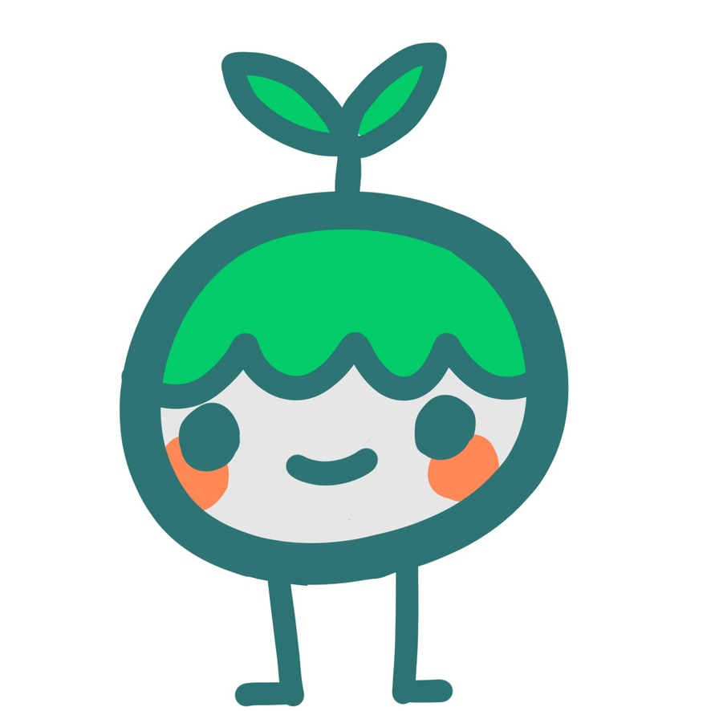
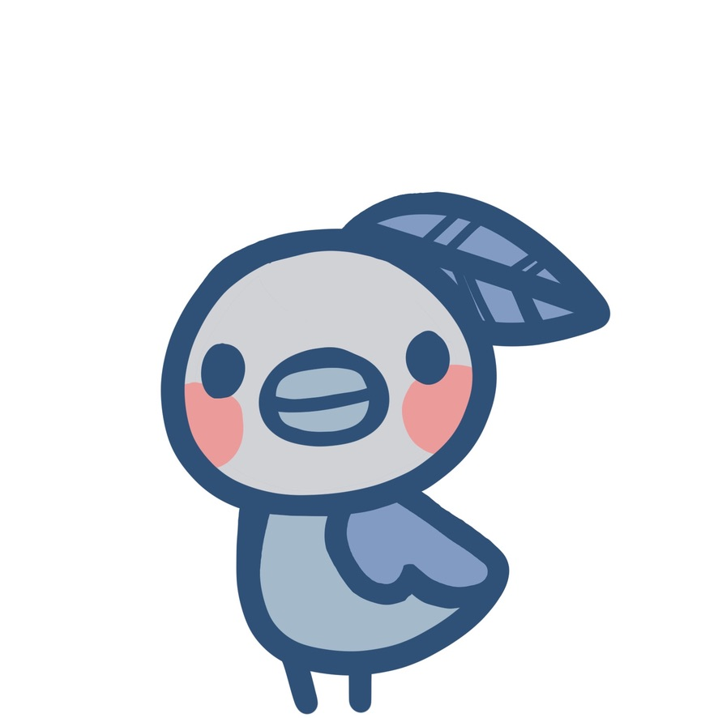

The Png-Tuber Project

The project
I got requested some work from an acquaintance to do an png-tuber for their youtube page. A png-tuber uses several different images that react to the mic input and then it looks like its speaking, this is a good alternative option if u dont want a facecam but still have an interactive modell.
The work
I got sent an general idea and a colortheme for this project and started to work around that and having back and fort with. After we agreed upon an good design then the actuall drawing begin. It was two figures and both needed: idle animation, talking without blinking, talking with blinking and idle with blinking.

